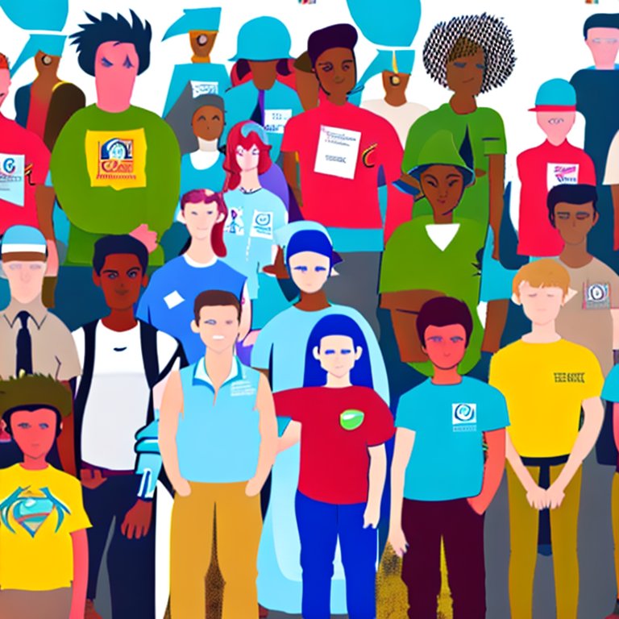
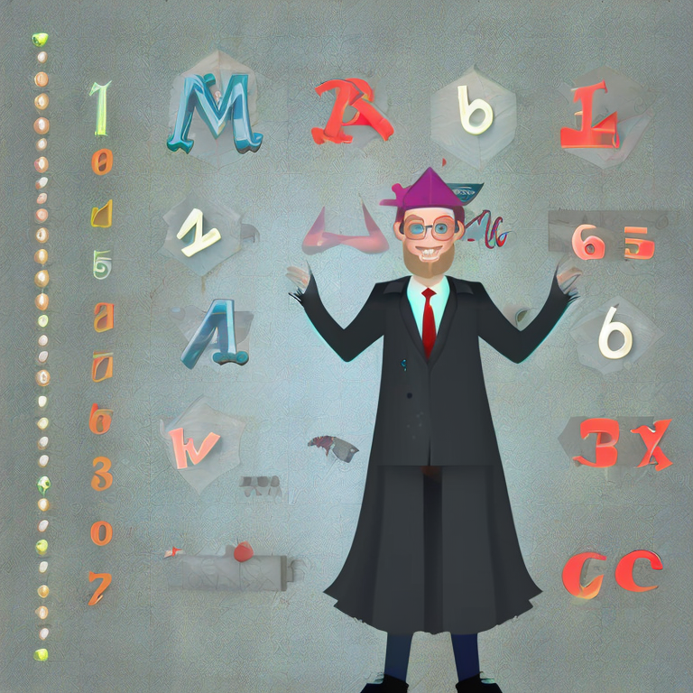

Título de la obra:
CUENTOS MATEMÁTICOS
Autor:
Inteligencia artificial (IA)
Diseño:
Hugo Pari Silva Santisteban
Código JavaScript para el libro: Joel Espinosa Longi, IMATE, UNAM.
Recursos interactivos: DescartesJS
Fuentes: Lato y UbuntuMono
Imagen portada: Tarantula Collective
Red Educativa Digital Descartes
Córdoba (España)
descartes@proyectodescartes.org
https://proyectodescartes.org
Proyecto iCartesiLibri
https://proyectodescartes.org/iCartesiLibri/index.htm
ISBN: 978-84-18834-60-8

Esta obra está bajo una licencia Creative Commons 4.0 internacional: Reconocimiento-No Comercial-Compartir Igual.
Tabla de contenido
Prefacio
Esperamos que este libro de cuentos matemáticos le brinde una nueva perspectiva sobre las matemáticas, y cómo estas pueden ser tan emocionantes e inspiradoras como cualquier otra forma de historia.
Aquí encontrará cuentos sobre los logros y desafíos de grandes matemáticos, cada uno de ellos contribuyendo con sus aportes al avance de esta disciplina. Además, estos cuentos también ilustran la belleza y la emoción de las matemáticas, y cómo estas pueden ser accesibles y significativas para todos, no solo para los expertos en la materia.
Esperamos que este libro sea una fuente de inspiración y entretenimiento para todos los amantes de las matemáticas, y una invitación para aquellos que aún no han descubierto el encanto de esta disciplina.
Además, el aprendizaje de las matemáticas desarrolla habilidades valiosas como el pensamiento lógico, la resolución de problemas y la capacidad de analizar y comprender la información. Estas habilidades son esenciales para el éxito en cualquier carrera y en la vida en general.
En resumen, aprender matemáticas es importante no solo para comprender y mejorar el mundo, sino también para desarrollar habilidades valiosas que son esenciales para el éxito en cualquier campo. Este libro de cuentos matemáticos es una oportunidad para descubrir la emoción y la importancia de las matemáticas, y para apreciar el papel de los grandes pensadores matemáticos en nuestra historia.
¡La divertida aventura de las ecuaciones matemáticas!
Había una vez un joven estudiante llamado Juan, quien estaba teniendo dificultades con las ecuaciones matemáticas. Se sentía abrumado y desanimado cada vez que tenía que resolver un problema.
Sin embargo, un día, mientras caminaba por el parque, se encontró con un anciano sabio que le ofreció ayudarlo a entender las ecuaciones de una manera divertida.
El anciano le contó a Juan una historia sobre un rey que vivía en un castillo rodeado de un gran laberinto. El rey estaba en posesión de un tesoro valioso, pero para llegar a él, uno debía resolver una serie de ecuaciones matemáticas. Juan estaba emocionado y aceptó el desafío.
Juan comenzó a recorrer el laberinto y en cada esquina encontraba una nueva ecuación para resolver. A medida que avanzaba, las ecuaciones se volvían cada vez más difíciles, pero con la ayuda del anciano, Juan aprendió a pensar de manera creativa y a ver las ecuaciones como un juego en lugar de una tarea aburrida.
Finalmente, Juan llegó al centro del laberinto y resolvió la ecuación final, lo que le permitió acceder al tesoro del rey. Era una gran cantidad de conocimiento y habilidades matemáticas, y Juan estaba agradecido y emocionado de haberlo encontrado. A partir de ese día, Juan ya no temía a las ecuaciones matemáticas y comenzó a disfrutar resolviéndolas.
La historia termina con Juan regresando a su vida cotidiana, con una gran sonrisa en su rostro, sabiendo que con esfuerzo y dedicación puede alcanzar cualquier cosa que se proponga.
La heroína matemática: La batalla por salvar el mundo
Había una vez una niña llamada Ana, que vivía en un pequeño pueblo rodeado de montañas y bosques. Ana era muy inteligente y le encantaba aprender sobre las matemáticas. A menudo pasaba horas estudiando y resolviendo problemas matemáticos en su libro de texto.
Un día, mientras caminaba por el bosque, Ana se topó con un extraño dispositivo metálico. Al examinarlo más de cerca, se dio cuenta de que era una especie de máquina del tiempo. Sin pensarlo dos veces, decidió activarlo.
De repente, Ana se encontró en un futuro imaginario en el que el mundo estaba siendo amenazado por una invasión alienígena. Los extraterrestres estaban utilizando un arma de destrucción masiva que podía destruir ciudades enteras con solo un disparo.
Ana se dio cuenta de que la única manera de salvar el mundo era desactivar la arma alienígena. Sin embargo, para hacerlo, tendría que resolver una serie de problemas matemáticos extremadamente difíciles.
Con determinación, Ana comenzó a trabajar en los problemas uno por uno, utilizando sus habilidades matemáticas para resolverlos. Primero tuvo que utilizar la suma para desbloquear una serie de cerraduras numéricas. Luego, utilizó la resta para desactivar un sistema de seguridad. Utilizó la multiplicación para desbloquear una puerta y finalmente utilizó la división para desactivar la arma alienígena.
Con éxito, Ana logró desactivar la arma alienígena y salvar al mundo. Los extraterrestres, sorprendidos por su habilidad matemática, huyeron a su planeta de origen.
Ana regresó a su hogar en el pasado, donde su familia y amigos la recibieron con alegría. A partir de ese día, Ana se convirtió en una heroína en su pueblo, y su historia se contó de generación en generación como un ejemplo de cómo las matemáticas pueden ser utilizadas para salvar el mundo.
El enigma de la supervivencia
Había una vez un pequeño pueblo llamado San Cristóbal, donde vivían un grupo de estudiantes apasionados por las matemáticas. Todos los días, se reunían en el parque a compartir sus conocimientos y a resolver problemas desafiantes. Pero un día, una terrible epidemia se extendió por todo el pueblo, dejando a la población en un estado de pánico y desesperación.
Los estudiantes se dieron cuenta de que debían hacer algo para salvar a su comunidad. Después de horas de investigación y estudio, descubrieron que la única manera de detener la epidemia era resolviendo un enigma matemático muy complejo. El enigma consistía en una ecuación con varias incógnitas y una serie de restricciones.
Los estudiantes se pusieron manos a la obra y comenzaron a trabajar en equipo para resolver el enigma. Utilizaron todos sus conocimientos matemáticos y trabajaron incansablemente durante días y noches. Finalmente, después de mucho esfuerzo y dedicación, lograron resolver el enigma y encontrar la solución..
Los estudiantes se convirtieron en héroes locales y su historia se contó de generación en generación, inspirando a otros jóvenes a seguir sus pasos y a utilizar sus conocimientos para ayudar a su comunidad. Y así, el enigma de la supervivencia se convirtió en un recordatorio de que, juntos, podemos superar cualquier desafío.
El método o pasos de Polya son estrategias didácticas útiles en la resolución de problemas matemáticos:
El maestro mágico de las matemáticas
Había una vez un profesor de matemáticas llamado Señor García, quien había enseñado durante años en una escuela de primaria. A pesar de su experiencia y dedicación, el Señor García se daba cuenta de que muchos de sus alumnos se aburrían en sus clases y no lograban aprender de manera efectiva.
El Señor García se propuso encontrar una fórmula mágica para enseñar matemáticas de manera fácil y divertida. Comenzó a investigar diferentes métodos de enseñanza y a experimentar con nuevas técnicas en su salón de clases.
Un día, el Señor García descubrió una técnica llamada "enseñanza mediante juegos" y decidió darle una oportunidad. En su próxima clase, introdujo un juego de estrategia en el que los estudiantes debían resolver problemas matemáticos para ganar. Los estudiantes se emocionaron con el juego y se involucraron activamente en la clase.
El Señor García continuó utilizando esta técnica y vio cómo sus alumnos comenzaban a aprender de manera más efectiva y a disfrutar de las matemáticas. Los estudiantes se volvieron más participativos, curiosos y motivados en las clases de matemáticas.
El Señor García se había encontrado con la fórmula mágica para enseñar matemáticas de manera fácil y divertida. Su enfoque innovador inspiró a otros profesores a seguir sus pasos y a utilizar esta técnica en sus propias clases. El Señor García se convirtió en un maestro mágico para sus estudiantes y en un ejemplo a seguir para otros profesores.
El Pokémon Matemático: La Gran Victoria
Había una vez un Pokémon llamado Koffing, quien siempre había sido apasionado por las matemáticas. A menudo se pasaba horas resolviendo problemas y operaciones en su cuaderno, siempre buscando mejorar sus habilidades.
Un día, Koffing escuchó hablar de un torneo de maestros Pokémon de resolución de problemas matemáticos que se celebraría en la ciudad cercana. Este torneo atrajo a los Pokémon más inteligentes y talentosos de toda la región, y Koffing sabía que era su oportunidad de demostrar su habilidad en las matemáticas.
Sin pensarlo dos veces, Koffing se inscribió en el torneo y comenzó a entrenar con todas sus fuerzas. Pasó días y noches estudiando y practicando, resolviendo problemas cada vez más difíciles y complejos.
Finalmente, llegó el gran día del torneo. Koffing se presentó con confianza, listo para demostrar lo que había aprendido. En la primera ronda, Koffing resolvió problemas de números primos y ecuaciones lineales con facilidad, impresionando a todos los demás participantes y al jurado.
En las siguientes rondas, Koffing se enfrentó a desafíos aún más difíciles, pero gracias a su dedicación y esfuerzo, logró superar cada uno de ellos con éxito. Finalmente, llegó a la ronda final, enfrentándose al Pokémon más talentoso de todos: un Alakazam.
El desafío final consistió en resolver un problema de cálculo integral en un tiempo límite. Koffing y Alakazam trabajaron con rapidez y precisión, pero al final, fue Koffing quien logró resolver el problema primero.
La multitud estalló en aplausos y vítores mientras Koffing era coronado como el Pokémon maestro de matemáticas. Koffing estaba muy emocionado y agradecido por haber ganado el torneo, pero lo más importante para él fue haber demostrado que con dedicación y esfuerzo, se pueden alcanzar los sueños más grandes.
Geométrico: El niño inventor

Había una vez un niño llamado Juan, que siempre había soñado con ser un superhéroe. Él quería ayudar a las personas y combatir la delincuencia en su ciudad, pero sabía que necesitaba algo especial para hacerlo. Un día, mientras estaba en la clase de matemáticas, aprendió sobre geometría, áreas y volúmenes de figuras geométricas. Juan se dio cuenta de que estos conocimientos podrían ayudarlo a construir el super traje que necesitaba.
Con la ayuda de su profesor de matemáticas, Juan comenzó a dibujar planos y diseños para su traje. Utilizó sus conocimientos de geometría para calcular el área y el volumen de las diferentes partes del traje, para asegurarse de que todo encajara perfectamente. Juan trabajó incansablemente en su proyecto, pasando todas sus tardes y fines de semana en el taller de su padre. Finalmente, después de varios meses, su traje estaba listo.
El traje de Juan tenía una capa especial que podía cambiar de color según la situación, un casco con visión nocturna y unos botones que le permitían volar y correr más rápido de lo normal. Juan estaba emocionado de probar su traje. Una noche, mientras caminaba por la calle, Juan vio a unos delincuentes robando una tienda. Sin pensarlo dos veces, Juan se puso su traje y salió a enfrentarse a ellos.

La lucha fue difícil, pero con la ayuda de su traje, Juan logró derrotar a los delincuentes y recuperar el dinero robado. Los transeúntes y la policía lo aplaudieron por su valentía. A partir de ese día, Juan se convirtió en un superhéroe de verdad, y utilizó sus conocimientos matemáticos para ayudar a la gente y combatir la delincuencia en su ciudad.

La gente comenzó a llamarlo "El Geométrico" y su fama se extendió por toda la ciudad. Los niños querían ser como él y los adultos lo admiraban por su inteligencia y coraje. Juan se convirtió en un héroe local, y su historia inspiró a muchas personas a utilizar sus conocimientos para hacer el bien en el mundo.
Desde entonces, Juan sigue siendo un superhéroe y usando su inteligencia matemática para combatir la delincuencia y ayudar a la gente, siendo un ejemplo para todos de cómo la educación y el conocimiento pueden ser herramientas poderosas para hacer un cambio positivo en el mundo. Con el tiempo, Juan decidió compartir sus conocimientos con otros jóvenes, y comenzó a dar talleres y clases de matemáticas para niños en riesgo de caer en la delincuencia. Él les enseñaba cómo utilizar sus habilidades matemáticas para construir y diseñar cosas útiles, y les mostraba cómo su educación podría ayudarles a tener un futuro mejor.
Los niños se sintieron inspiradosy se enorgullecieron de sus habilidades matemáticas. Muchos de ellos comenzaron a verlas como algo valioso y útil, y muchos incluso decidieron estudiar carreras científicas.
Juan se convirtió en un verdadero héroe para estos niños, y su legado vivirá por siempre en su ciudad. A través de su ejemplo, él les enseñó que con dedicación, trabajo duro y la aplicación de sus conocimientos, cualquier persona puede ser un héroe y hacer una diferencia en el mundo.
Conclusión
El cuento y el juego son herramientas valiosas en el aprendizaje de la matemática. A través de historias y juegos, los estudiantes pueden relacionar los conceptos matemáticos con situaciones y problemas cotidianos, lo que los ayuda a comprender mejor los conceptos y aplicarlos en contextos reales. Además, el uso de cuentos y juegos en el aula puede mejorar la motivación y el interés de los estudiantes en la matemática. Los cuentos pueden proporcionar un contexto para la enseñanza de conceptos matemáticos complejos, como el cálculo. Por ejemplo, un cuento sobre un personaje que viaja a través de un laberinto puede ayudarlos a comprender cómo se pueden utilizar las ecuaciones para encontrar la ruta más corta. Los juegos, por otro lado, pueden proporcionar un ambiente lúdico y desafiante para practicar y aplicar los conceptos matemáticos aprendidos. Además, el juego y el cuento son una excelente forma de fomentar la colaboración y la comunicación entre los estudiantes, ya que a menudo se requiere que trabajen en equipo para resolver problemas y completar tareas. Esto puede ayudar a desarrollar habilidades sociales y de liderazgo, lo que es esencial para su éxito tanto en la escuela como en la vida profesional.
En resumen, el uso de cuentos y juegos en el aprendizaje de la matemática puede mejorar la comprensión y la aplicación de los conceptos matemáticos, aumentar la motivación y el interés de los estudiantes, y fomentar la colaboración y la comunicación entre ellos. Los profesores deberían considerar la incorporación de estas herramientas en su enseñanza para mejorar la efectividad y la eficiencia del aprendizaje de la matemática.